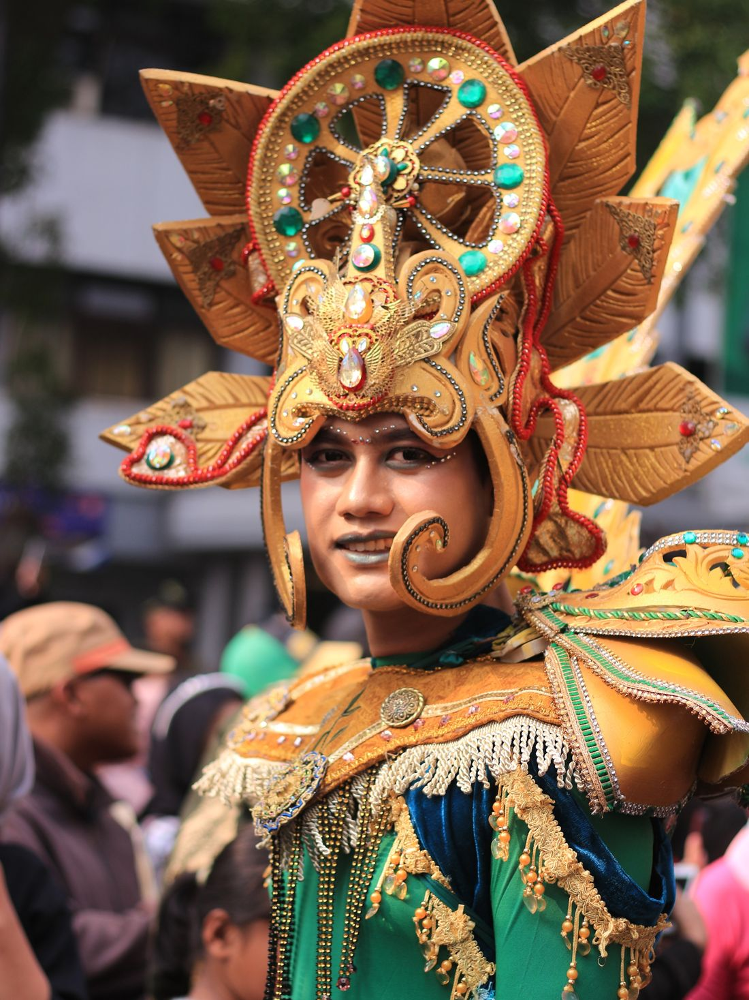
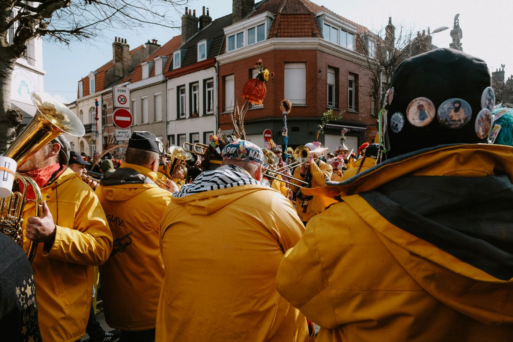
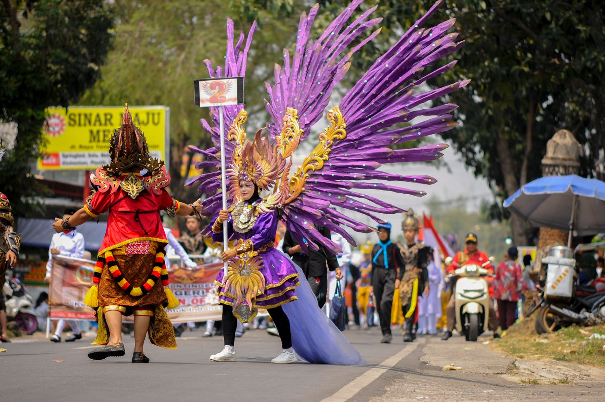
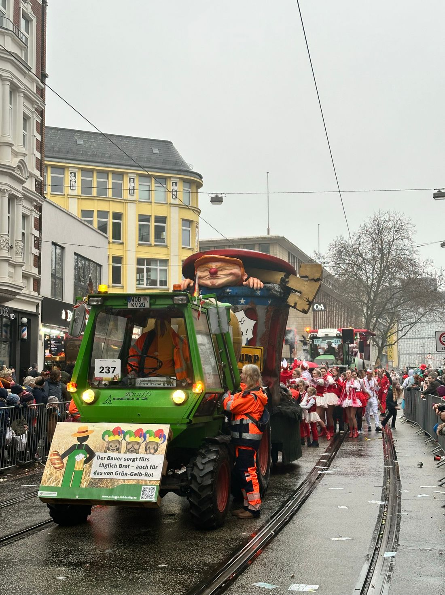
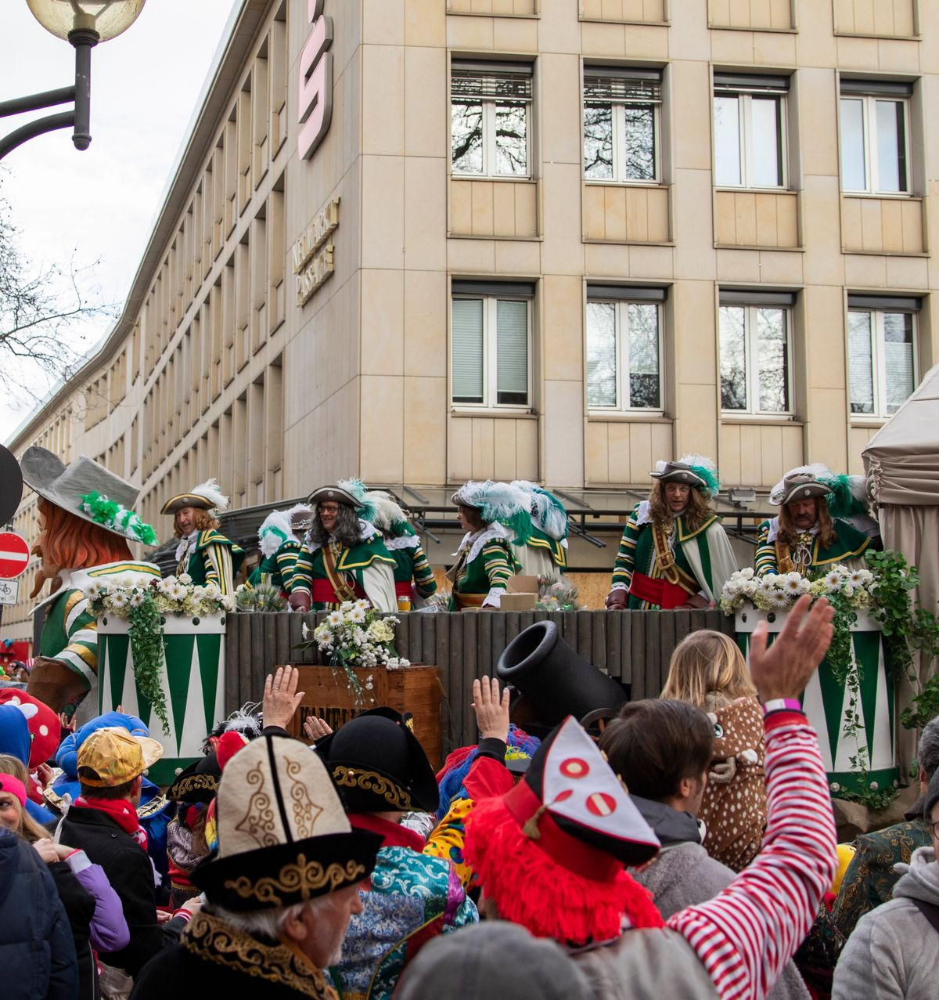
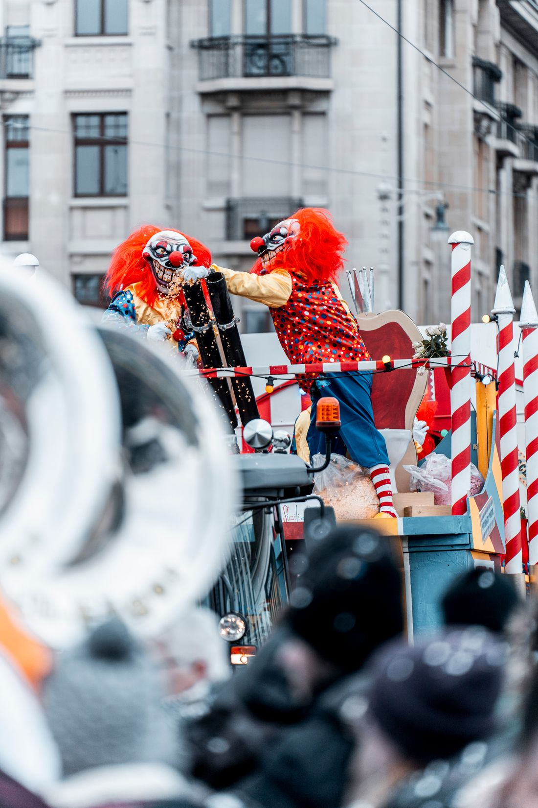
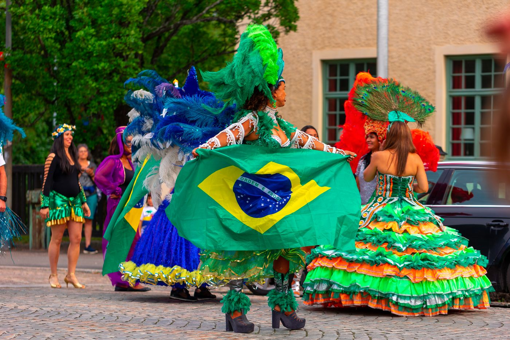
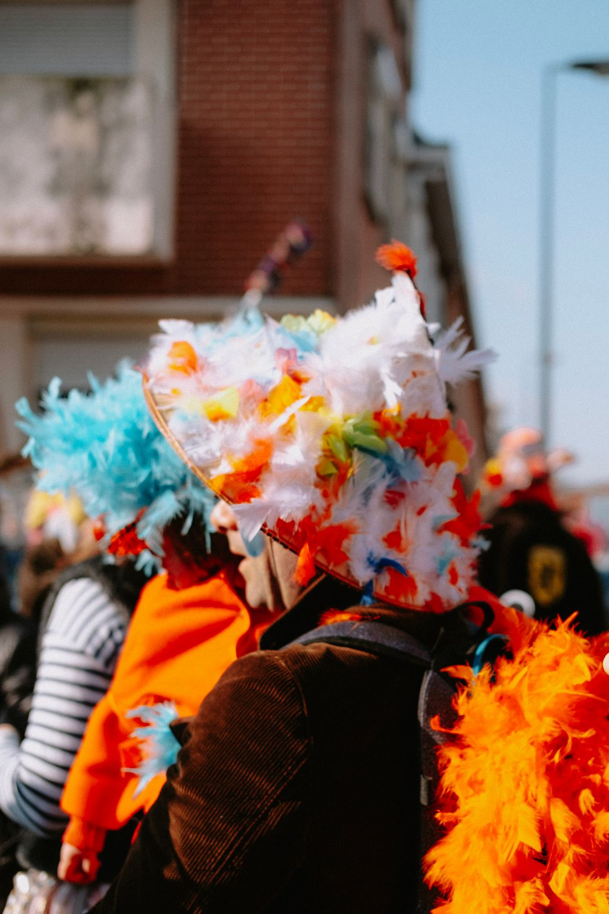

Mardi Gras · New Orleans · Season 2027 booking open
The parade passes once. Be standing in the right block.
Parade coverage for krewes, media and brands — shot from a block plan, not from luck.
Every frame on this site carries its parade, its date and its block position, because position is the skill. The card maths, the fees and the rain terms are printed in the open, below the photographs.


About these frames. The photographs on this wall and in the deck below are reference photographs by the photographers credited under each frame, published via Pexels and listed in full in CREDITS.md. They set the scene honestly. Odette's own delivered galleries are the case files in Parade Files — described frame by frame, with parade, date and block position on every one.
The Parade Deck
Drag the frames — or swipe





The quiet zone — numbers, printed in the open
Cards, gigabytes and fees — worked out in front of you
A parade day is planned like a route: hours by coverage class, frames by the rates below, cards by the spare rule. Both tools run on the printed tables — change the inputs and the arithmetic updates line by line.
Card & Coverage Calculator
How much card a parade day eats, before the day eats it. Rates and file sizes are the practice's stated planning figures, printed here so the tool can be checked against them.
| RAW | 45 MB / frame |
|---|---|
| JPEG Fine | 12 MB / frame |
| RAW + JPEG | 57 MB / frame |
| Parade peak | floats passing, throws flying | 420 frames / hr |
|---|---|---|
| Street ambient | crowd, bands, second lines | 180 frames / hr |
| Portrait stops | posed riders & costumes | 90 frames / hr |
Card rule (printed): a 128 GB card is filled to 90% — 115.2 GB usable. Spare rule (printed): cards carried = cards needed × 1.5, rounded up. A card that fails mid-parade is replaced from the spares, not mourned.
The workings
- Peak: 3 hrs × 4201,260 frames
- Ambient: 2 hrs × 180360 frames
- Portraits: 1 hr × 9090 frames
- Total frames1,710
- Storage: 1,710 × 45 MB76.95 GB
- Cards needed (÷ 115.2 GB usable, rounded up)1
- Cards carried (× 1.5 spare rule, rounded up)2
Booking Estimator
The fee shape, as a sum. Rates are the published 2027 season rates; the estimator adds exactly the lines printed below — nothing is bundled in silently.
| Parade day | one parade, up to 10 hrs on route | $1,450 |
|---|---|---|
| Parade half-day | one parade, up to 4 hrs | $850 |
| Second shooter | opposite side of the route, per parade day | +$450 |
| Rush delivery | full gallery in 48 hrs, flat | +$300 |
| Standard delivery | full gallery in 7 days | included |
The sum
- Parade days: 1 × $1,450$1,450
- Half-days: 0 × $850$0
- Second shooter: 0 days × $450$0
- Rush delivery$0
- Estimate$1,450
An estimate, not an invoice: the confirmed fee is fixed in writing before the season, and the rain terms on the About page apply exactly as printed there.
The register
What is booked, and what is still open
What moves the price: parade count first, delivery speed second. A second shooter is charged per full parade day only; rain never adds a fee — a rained-out parade is rescheduled under the printed terms, not re-sold. Nothing else moves the price: not the size of the crowd, not the fame of the krewe, not how late the enquiry arrives.
The record, counted
Nine seasons on the route
“Odette sent us the block plan before she sent us a price. On the day, she was exactly where the plan said she would be — and the photograph our programme used was taken from the corner she had marked, in the light she had promised.”
Denise Landry — Programme Chair, Krewe of the Brass Moon · attached to the Brass Moon parade file, Parade Files
Your parade rolls once.
Tell me the krewe, the date and the route. You get a block plan and a fixed fee in writing before you commit to anything — the same plan-first way every gallery on this site was made.